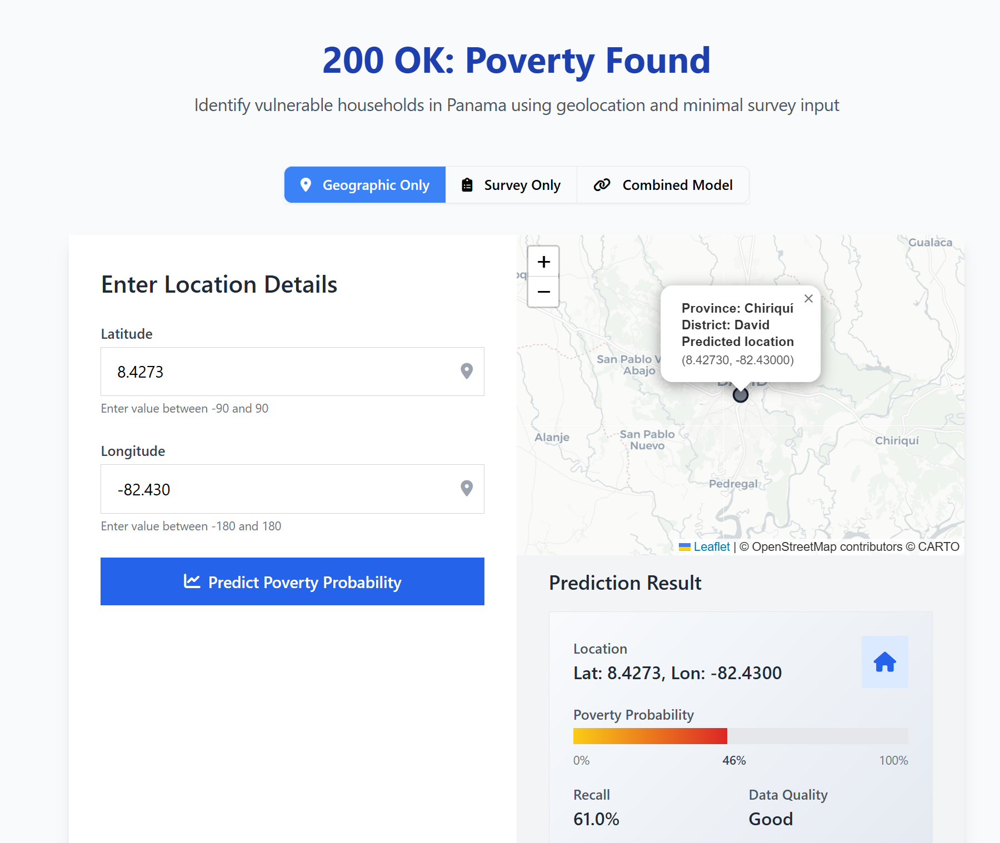

About me
AngelaLopI am a data and social scientist with training in computational analysis, economics, and international studies, focused on understanding and communicating social and economic inequalities.
I believe that better public policy starts with high-quality data, from rigorous data collection and statistical production to careful analysis and clear visualization. My work focuses on inequalities in education, labor markets, income, and access to opportunities, combining hands-on experience in official statistics, data engineering, and policy analysis.
I use data analysis and visualization not only to explain patterns, but to support evidence-based decision-making in public and international policy contexts.
Selected Work
Panama Life Cycle Activity Explorer
This project builds an interactive "life cycle activity explorer" that lets users scrub through how participation in key life cycle activities (education, employment, unemployment, inactivity, retirement) varies across Panama's territories by age and gender.
View Project →Location Matters for Unlocking People's Potential
This project examines regional inequalities in human capital across and within countries. The analysis investigates how location affects individuals' potential to accumulate human capital, measured through health outcomes and educational achievements.
View Project →
Poverty Classification with Multi-Modal Data
This project develops a machine learning model that classifies households into poverty categories by combining features extracted from satellite imagery (e.g., urbanization indicators, land cover types, nightlight radiance), and a limited set of household-level survey or proxy means test (PMT) questions.
View Repository → Private repo - request accessUnderstanding Crime and School Attendance in Chicago
This project aims to integrate, analyze, and visualize spatial, administrative, and demographic data to characterize school dropouts across Chicago schools, with a particular focus on the role of crime in shaping these educational outcomes.
View Repository →
Geographic Inequalities in Access to Opportunities
This report chapter examines how the place where people are born and grow up shapes their opportunities in life in OECD countries. I provided statistical assistance, created and coordinated the data visualizations for this chapter.
View Report →
Panama 2023 Poverty Assessment: Labor Market Technical Note
Panama has experienced significant economic growth over the past three decades, but labor market inequalities have prevented the equitable distribution of benefits. I prepared this technical note.
View Report →